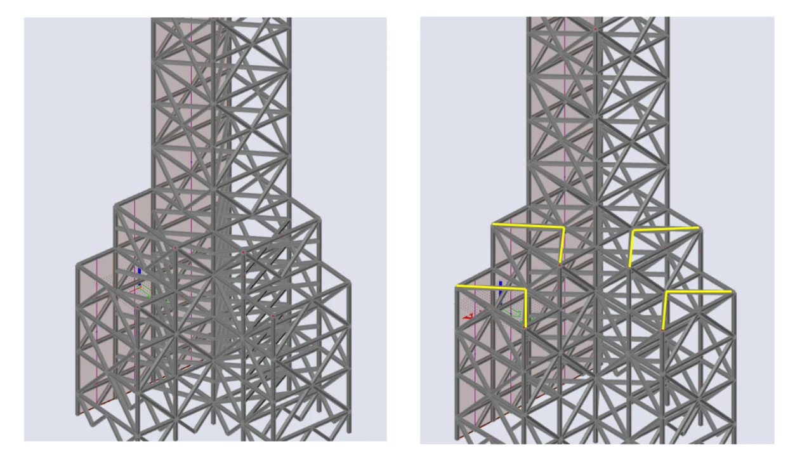
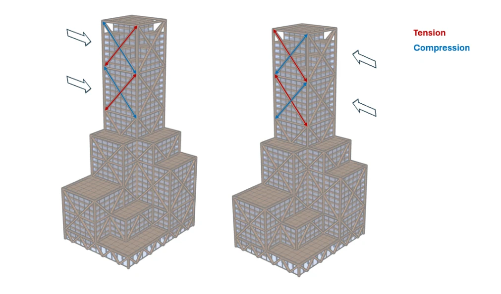

Hoog bouwen.
Bewust kiezen.
Design of a High Rise Tower
7KS2M0
Hoe verbind je materiaalkeuze, stabiliteit en architectuur?
Het groepsproject onderzoekt een hoogbouwontwerp op het VDMA-terrein in Eindhoven. Het doel is de materiaalgebonden CO₂-impact te beperken, met aandacht voor constructieve prestaties, flexibiliteit en toekomstig gebruik.
Keuzes zichtbaar maken.
We vergelijken drie ontwerpvarianten en kiezen een getrapte houten toren. Vervolgens onderzoeken we het stabiliteitssysteem en werken we belastingen, dimensionering, verbindingen en uitvoering uit. Het verslag combineert architectonische en constructieve afwegingen.
CLT-kernen en een houten vakwerksysteem spelen een belangrijke rol in het gekozen ontwerp. De keuze voor hout werkt door in veel andere onderdelen: van verbindingen en stijfheid tot brandveiligheid, akoestiek en onderhoud.


Wat dit project laat zien.
Het project maakt duidelijk dat een materiaalkeuze meerdere beoordelingen vraagt. Een gunstige uitkomst voor materiaalgebonden CO₂ is één onderdeel; prestaties, detaillering en duurzaamheid in gebruik moeten meewegen. Het verslag bespreekt daarom ook beperkingen en mogelijke verbeteringen.
Van projectervaring naar uitleg.
Laat zien welke vakken bij dezelfde ontwerpvraag samenkomen. Koppel stabiliteit en materiaalgedrag aan verbindingen, gebruikseisen en de ruimtelijke opzet.
Bekijk het interactieve concept →Het volledige verslag.
Bekijk de oorspronkelijke onderbouwing, berekeningen en tekeningen.